I'm a Norwegian born, UK taught UX/UI designer, with a passion for pixels, people and the great outdoors.
I'm in my element when I get to be creative. I thrive from brainstorming ideas, developing concepts and carrying them through to finished designs. I sketch in Paper App, knock out responsive prototypes straight in the browser, write scalable Sass, and use Photoshop only for 'shopping' photos.
Key skills
-
Core skills
- Interaction design
- Prototyping with live data
- Quant & qual UX research
- Presenting
- Information architecture
- Visual design
-
Tools
- Figma
- Adobe Creative Suite
- HTML/CSS/JavaScript
- Jekyll
- Looker
- dScout/Usertesting.com
-
Languages
- English (fluent)
- Norwegian (native)
- Swedish (conversant)
- Danish (conversant)
So far I've designed for these..
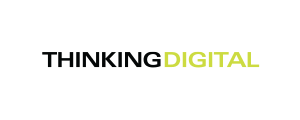
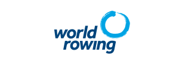
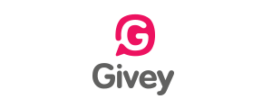
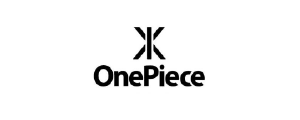
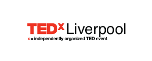
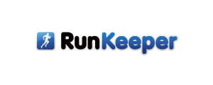
 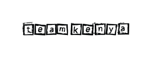
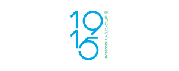
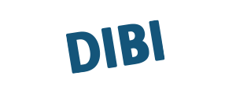
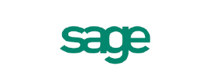
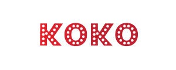
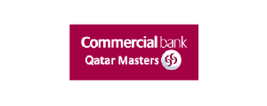
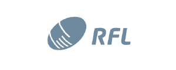
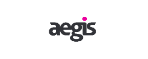
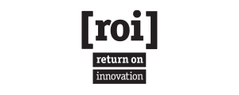
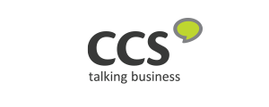
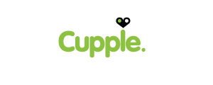
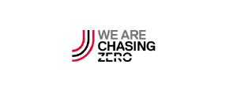
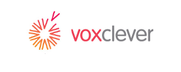
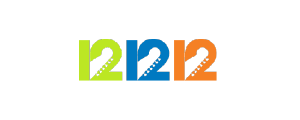
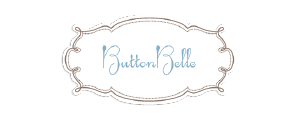
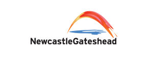
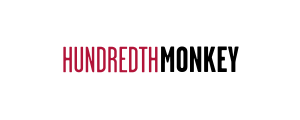
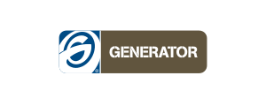
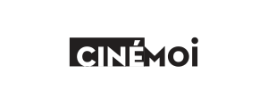
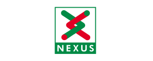
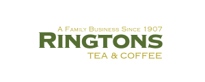
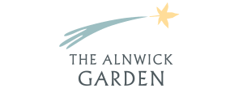
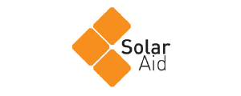
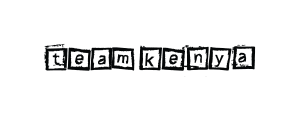
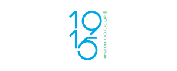
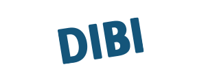
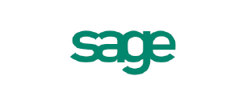
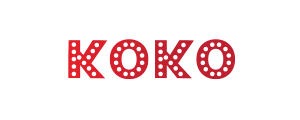
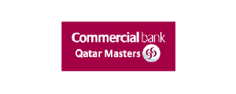
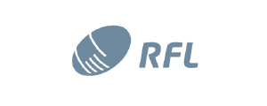
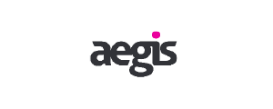
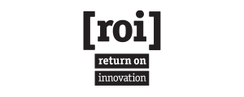
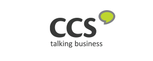
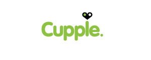
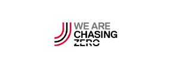
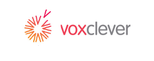
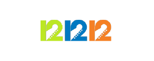
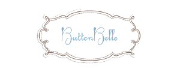
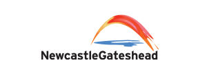
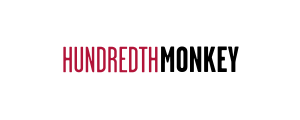
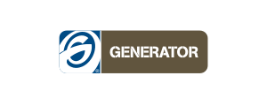
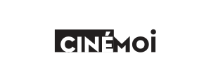
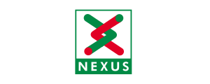
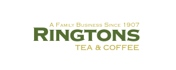
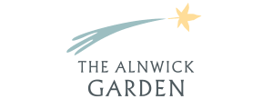
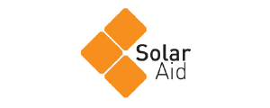
For more detailed case studies, visit my portfolio
Work experience
-
Principal Product Designer II
Stitch Fix
2014 - Present
Previous titles: Principal Product Designer (2 years), Lead UX Designer (2 years) Senior UX Designer (2.5 years)
Case studies available on request
-
Advisor
Joro
2020 - Present
Carbon-cutting start-up backed by Sequoia. Advise the CEO on design strategy on an ad-hoc basis.
-
CCO
Givey
2012 - 2014
Social donation start-up based in the UK. Defined product experience, go-to-market partership campaigns (e.g. OnePiece & RunKeeper), as well as the employee matching experience revenue model which aquired paying customers.
Read my Givey case study
-
Creative Director
The Thinking Digital Conference
2012 - 2015
TED style annual technology conference based in the UK. Directed branding, website and print materials.
Read my TDC case study
-
Chief Creative Officer
Givey
2012 - 2014
Read my Givey case study
Businesses I collaborated with included OnePiece, RunKeeper, London Midland and Solar Aid.
-
Lead User Experience Designer
Cravens
2010 - 2012
Renowned UK advertising firm. Led experience design for all digital campaigns. Clients included Virgin, Northumbria University, ZSL London Zoo, World Rowing, Rugby Football League and Qatar Masters.
-
Head of Design
Orange Bus
2007 - 2010
Web design firm based in the UK. As their first hire, I managed a team of 4 designers and delivered design and front-end development on all projects. The company grew to ~30 during my tenure. Clients included KOKO London, Sage and Nexus. Aquired by Capita.
-
Product designer, Photographer and Videographer
Freelance
2001 - Present
Read my TEDxLiverpool case study
Other projects I worked on included DIBI Conference, Rewired State, Aegis IT, GameHorizon, Return on Innovation, Microsoft's Imagine Cup, Team Kenya, Appysnap, Cupple and Usable.
Qualifications
-
MA Design
Northumbria University at Newcastle
2005 - 2007
Distinction - best in class
-
BA (hons) Multimedia Computing
University of Sunderland
2002 - 2005
First class honours degree
-
Visual Communication
NTNU Trondheim, Norway
2002
-
Web & Mac Design
MI, Trondheim, Norway
2001
-
Sports & Friluftsliv
Voss, Norway
1999 - 2000
'Friluftsliv' is one of those Scandinavian terms that can't be translated, but this article describes it well.
-
Norwegian High School Diploma
Lillestrøm, Norway
1996 - 1999
Primary subjects: IT, Maths and English